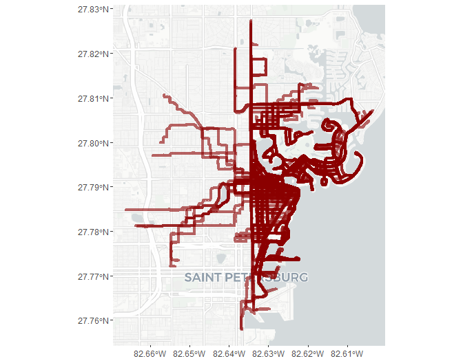
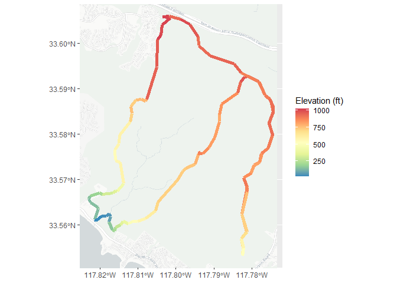
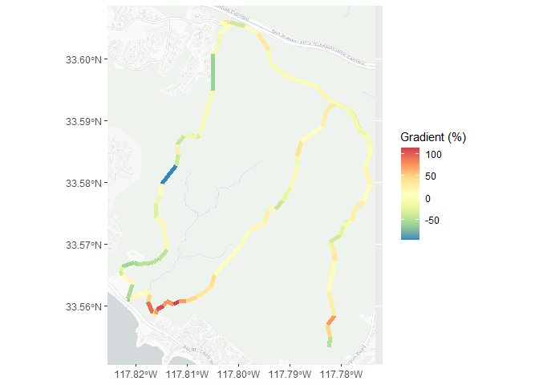
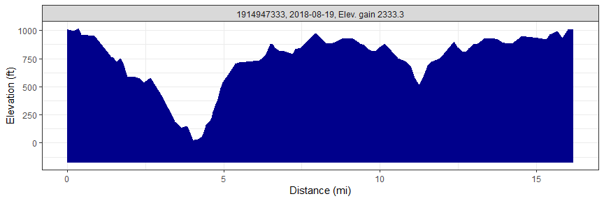
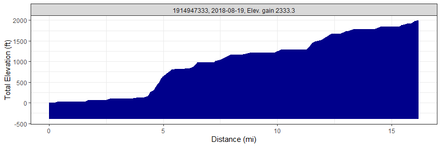
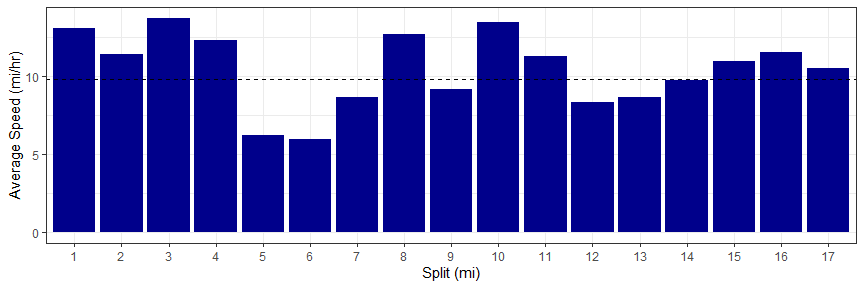
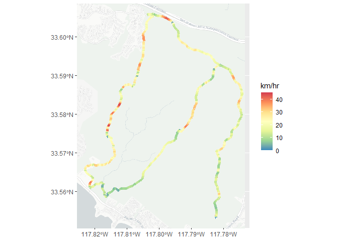
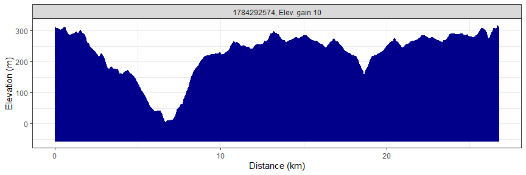
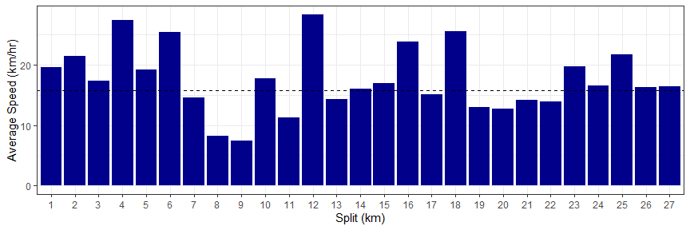

Marcus W. Beck, mbafs2012@gmail.com, Pedro Villarroel, pedrodvf@gmail.com, Daniel Padfield, dp323@exeter.ac.uk, Lorenzo Gaborini, lorenzo.gaborini@unil.ch, Niklas von Maltzahn, niklasvm@gmail.com


Overview and installation
This is the development repository for rStrava, an R package to access data from the Strava API. The package can be installed from CRAN. It is also available on r-universe.
install.packages('rStrava')The development version from this repository can be installed as follows:
install.packages('rStrava', repos = c('https://fawda123.r-universe.dev', 'https://cloud.r-project.org'))Issues and suggestions
Please report any issues and suggestions on the issues link for the repository.
Package overview
The functions are in two categories depending on mode of use. The first category of functions scrape data from the public Strava website and the second category uses the API functions or relies on data from the API functions. The second category requires an authentication token. The help files for each category can be viewed using help.search:
help.search('notoken', package = 'rStrava')
help.search('token', package = 'rStrava')Scraping functions (no token)
An example using the scraping functions is below. Some users may have privacy settings that block public access to account data.
# get athlete data
athl_fun('2837007', trace = FALSE)## $`2837007`
## $`2837007`$name
## [1] "Marcus Beck"
##
## $`2837007`$location
## [1] "United States"
##
## $`2837007`$follow
## Followers Following
## 1 82 83
##
## $`2837007`$monthly
## Distance Moving Time
## 1 92.2 mi 10:11:08
##
## $`2837007`$recent
## Date Name Distance Elevation Time
## 1 June 20, 2025 Morning Ride 4.4 km 4 m 11:57
## 2 June 20, 2025 Morning Run 5.1 km 5 m 28:39
## 3 June 19, 2025 Afternoon Ride 4.4 km 6 m 12:18API functions (token)
Setup
These functions require a Strava account and a personal API, both of which can be obtained on the Strava website. The user account can be created by following instructions on the Strava homepage. After the account is created, a personal API can be created under API tab of profile settings. The user must have an application name (chosen by the user), client id (different from the athlete id), and an application secret to create the authentication token. Additional information about the personal API can be found here. Every API retrieval function in the rStrava package requires an authentication token (called stoken in the help documents). The following is a suggested workflow for using the API functions with rStrava.
First, create the authentication token using your personal information from your API. Replace the app_name, app_client_id, and app_secret objects with the relevant info from your account.
app_name <- 'myappname' # chosen by user
app_client_id <- 'myid' # an integer, assigned by Strava
app_secret <- 'xxxxxxxx' # an alphanumeric secret, assigned by Strava
# create the authentication token
stoken <- httr::config(token = strava_oauth(app_name, app_client_id, app_secret, app_scope="activity:read_all"))Setting cache = TRUE for strava_oauth will create an authentication file in the working directory. This can be used in later sessions as follows:
Finally, the get_heat_map and get_elev_prof functions require a key from the Google API. Follow the instructions here. The key can be added to the R environment file for later use:
# save the key, do only once
cat("google_key=XXXXXXXXXXXXXXXXXXXXXXXXXXXXXXXXXXXXXX\n",
file = file.path(normalizePath("~/"), ".Renviron"),
append = TRUE)
# retrieve the key, restart R if not found
google_key <- Sys.getenv("google_key")Using the functions
The API retrieval functions are used with the token.
myinfo <- get_athlete(stoken, id = '2837007')
head(myinfo)## $id
## [1] 2837007
##
## $username
## [1] "beck_marcus"
##
## $resource_state
## [1] 2
##
## $firstname
## [1] "Marcus"
##
## $lastname
## [1] "Beck"
##
## $bio
## [1] ""An example creating a heat map of activities:
library(dplyr)
# get activities by date range
my_acts <- get_activity_list(stoken, after = as.Date('2020-12-31'))
act_data <- compile_activities(my_acts)
# subset by location
toplo <- act_data %>%
filter(grepl('Run$', name)) %>%
filter(start_latlng2 < -82.63 & start_latlng2 > -82.65) %>%
filter(start_latlng1 < 27.81 & start_latlng1 > 27.78)
get_heat_map(toplo, key = google_key, col = 'darkred', size = 1.5, distlab = F, alpha = 0.6, zoom = 13)
Plotting elevation and grade for a single ride:
# get data for a single activity
my_acts <- get_activity_list(stoken, id = '1784292574')
act_data <- compile_activities(my_acts)
# plot elevation along a single ride
get_heat_map(my_acts, alpha = 1, add_elev = T, distlab = F, key = google_key, size = 2, col = 'Spectral', units = 'imperial')
# plot % gradient along a single ride
get_heat_map(my_acts, alpha = 1, add_elev = T, distlab = F, as_grad = T, key = google_key, size = 2, col = 'Spectral', units = 'imperial')
Get elevation profiles for activities:
get_elev_prof(my_acts, key = google_key, units = 'imperial')
get_elev_prof(my_acts, key = google_key, units = 'imperial', total = T)
Plot average speed per split (km or mile) for an activity:
# plots for most recent activity
plot_spdsplits(my_acts, stoken, units = 'imperial')
Additional functions are provided to get “stream” information for individual activities. Streams provide more detailed information about location, time, speed, elevation, gradient, cadence, watts, temperature, and moving status (yes/no) for an individual activity.
Use get_activity_streams for detailed info about activities:
# get streams for the first activity in my_acts
strms_data <- get_activity_streams(my_acts, stoken)
head(strms_data)## altitude distance grade_smooth lat lng moving time velocity_smooth
## 1 310.0 0.0000 -1.2 33.60582 -117.8021 FALSE 0 0.00
## 2 310.1 0.0034 -2.1 33.60582 -117.8021 TRUE 9 1.44
## 3 309.9 0.0082 -2.2 33.60581 -117.8020 TRUE 11 2.52
## 4 309.7 0.0141 -3.2 33.60580 -117.8020 TRUE 13 3.96
## 5 309.6 0.0180 -1.6 33.60580 -117.8019 TRUE 14 10.44
## 6 309.5 0.0223 0.0 33.60580 -117.8019 TRUE 15 11.52
## id
## 1 1784292574
## 2 1784292574
## 3 1784292574
## 4 1784292574
## 5 1784292574
## 6 1784292574Stream data can be plotted using any of the plotting functions.
# heat map
get_heat_map(strms_data, alpha = 1, filltype = 'speed', size = 2, col = 'Spectral', distlab = F)
# elevation profile
get_elev_prof(strms_data)
# speed splits
plot_spdsplits(strms_data, stoken)
Contributing
Please view our contributing guidelines for any changes or pull requests.
License
This package is released in the public domain under the creative commons license CC0.